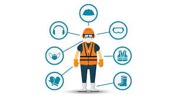

A importância do uso de EPI
Os Equipamentos de Proteção Individual (EPIs) são ferramentas fundamentais para a prevenção de acidentes e a proteção da saúde dos trabalhadores em diversas atividades profissionais. Seu uso é obrigatório sempre que houver riscos à integridade física que não possam ser eliminados por medidas de engenharia, administrativas ou de organização do trabalho. Os EPIs atuam como uma barreira entre o trabalhador e os riscos existentes no ambiente de trabalho, podendo proteger partes específicas do corpo, como a cabeça, os olhos, as mãos, os pés, o sistema respiratório, entre outros. Capacetes, luvas, óculos de proteção, protetores auriculares, respiradores e calçados de segurança são exemplos comuns desses equipamentos. A importância do uso correto dos EPIs vai além do simples cumprimento das normas legais, como a NR 6 (Norma Regulamentadora nº 6), que estabelece as obrigações tanto dos empregadores quanto dos empregados quanto à seleção, fornecimento, uso e conservação desses equipamentos. Trata-se de uma questão de responsabilidade, cultura preventiva e respeito à vida. Portanto, promover o uso adequado dos EPIs significa investir em segurança, reduzir afastamentos por acidentes ou doenças ocupacionais e preservar o bem mais valioso de qualquer organização: o ser humano.

Mecanismos do SST: Como Garantir a Segurança e a Saúde no Trabalho
-
1. Normas Regulamentadoras (NRs)
São regras estabelecidas pelo Ministério do Trabalho que definem os requisitos mínimos para garantir a segurança e a saúde dos trabalhadores. Exemplos são a NR-6 (Equipamentos de Proteção Individual) e a NR-35 (Trabalho em Altura).
-
2. Programa de Prevenção de Riscos Ambientais (PPRA)
É um programa obrigatório que identifica, avalia e controla os riscos ambientais presentes no local de trabalho, como ruído, poeira, agentes químicos e físicos.
-
3. Programa de Controle Médico de Saúde Ocupacional (PCMSO)
Focado na saúde do trabalhador, o PCMSO promove exames médicos periódicos para detectar precocemente doenças relacionadas ao trabalho.
-
4. Comissão Interna de Prevenção de Acidentes (CIPA)
Grupo formado por trabalhadores e empregadores que atua na identificação de riscos e na promoção de ações preventivas dentro da empresa.
-
5. Equipamentos de Proteção Individual (EPIs)
Itens fornecidos pela empresa para proteger o trabalhador contra riscos específicos, como capacetes, luvas, óculos de proteção e máscaras.
-
6. Treinamentos e Capacitação
E ducação contínua sobre segurança, uso correto de equipamentos e procedimentos, essenciais para manter a equipe preparada e consciente dos riscos.
Esses mecanismos formam a base para a gestão eficaz da SST, criando um ambiente de trabalho mais seguro e saudável para todos. A participação ativa dos trabalhadores, o comprometimento da empresa e o cumprimento das normas são essenciais para o sucesso dessas ações.